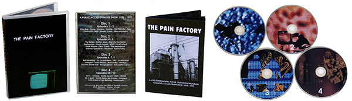
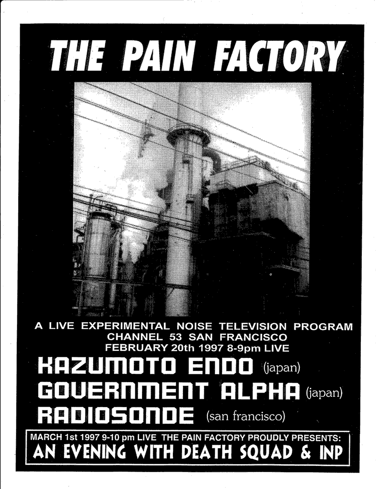

The Pain Factory (1995-1997)
For about three decades, Michael Contreras has been one of the most consistently intriguing artists in the Industrial Noise scene, beginning under the name Trucido, then as Death Squad, and most recently as MK9. Anyone who has followed his prolific output through the years has recognized Contreras’ versatile use of multi-media elements, including text, photography, performance, and video. Another major piece of his body of work was almost lost, however, nearly forgotten since the mid-1990s: The Pain Factory.
In 1995, Contreras, then an employee at Channel 53, San Francisco’s Public Access TV station, decided to curate and produce a monthly TV show showcasing Industrial/Noise/Experimental music and film. It is difficult to understate how subversive The Pain Factory series was. In the pre-internet era, public access TV provided the only platform by which controversial imagery and art could be broadcast to the world at large, and Contreras maximized the use of this peculiar medium, pushing the boundaries in ways that were unfathomable at the time. Contreras, and the artists whose work he projected over the airwaves to often unsuspecting viewers, were unconstrained and confrontational—so much so that the show was threatened with lawsuits and featured in local papers due to the extremity of the imagery.
The Pain Factory is also notable because it offers a snapshot of the mid-1990s Noise scene. The years 1995-1997 arguably represented the scene’s peak output, in terms of quantity and quality, and yet, it was strikingly underdocumented. The Pain Factory offers a unique record of the musical and visual activity of some of the era’s most significant figures and captures the aesthetic breadth of the Noise scene at large in that era, before rote adherence to self-imposed rules and sub-categories became the new norm in the 2000s. The quality is also impressive. These aren’t basement camcorder videos; The Pain Factory was a legitimate television broadcast program, and many of the performances featured here were recorded live in the Channel 53 TV studio.
Unless you lived in the Bay Area during the mid-1990s, it was impossible to see The Pain Factory. Only a single set of U-matic and S-VHS tapes exists, which Contreras himself kept safe through the years. The show was never widely tape-traded and has never made its way onto the internet. Contreras has spent nearly two years restoring and digitizing the entire series in an effort to rescue them from analog oblivion. It is, therefore, a major revelation to finally see an official presentation of this material, jointly released by Contreras’ own Spastik Kommunikations label and Influencing Machine Records.
This 4-DVD set features 16 page full-color booklet with original flyers and artwork and liner notes by G.X. Jupitter-Larsen, Scott Arford, J. Campbell, Jeff Gunn and Michael Contreras. It contains approximately 13 hours of footage, including nearly every performance and video submission broadcast as part of The Pain Factory series:
Live Performances:
Killer Bug Crawl Unit Seethe Flat Tire Fin Nihil Spastic Colon The Haters
Big City Orchestra Radiosonde Not Breathing Dr. Crystal Mess YAU Anal Sadist
Stimbox Hungry Ghost Sirvix Loaded Chris Cobb & Yael Bartana
Moe! Staiano UBZUB Instagon Air-o-gant Death Squad Frank Moore Glass Crash
Taped Submissions and Performances by:
Xome The Amputease Taint Scott Arford Seedmouth Genetic Death Cell
The Haters Death Squad Rotten Jesus MSBR Electronic Karma Sutra
Macronympha Stimbox Frank Moore Instagon Death Keeps Me Awake
Short Films and Video:
The Digger Snuff Balloon Holes On The Neck Institutional Broadcast
Serrrations TV Homicide Dahmer Spectacle

DVD MENUS


*Even though these DVDs contain the exact content broadcast on television at that time, some people may consider the material to be of an adult or mature nature*
Detailed Release Information on Discogs.com FaceBooked Page
Original Broadcast Episode List
Episode 1
Premiere (01:09:00) October 29th 1995
Live Performances: Killer Bug, Crawl Unit
Taped Performance: Xome Video: Stimbox
Episode 2
Live Indoctrinations (01:10:00) January 29th 1996
Live Performances: Seethe, Flat Tire
Taped Performance: Macronympha Short Film: Snuff Balloon
Episode 3
Three Thirteen Minute Performances (01:00:00) March 13th 1996
Live Performances: Fin, Nihil, Spastic Colon
Video: Taint Short Film: The Digger
Episode 4
Three From The City (02:02:00) May 30th 1996
Live Performances: The Haters, Big City Orchestra
Tape Performance: Rotten Jesus, The Amputease
Video: Death Squad, MSBR, TV Homicide
Episode 5
(01:24:00) June 30th 1996
Live Performances: Frank Moore, Glass Crash, Radiosonde
Video: Big City Orchestra, Dahmer Spectacle
Taped Performance: Electronic Karma Sutra
Episode 6
Six (00:59:00) July 30th 1996
Live Performances: Not Breathing, Dr. Crystal Mess, YAU
Video: Sound, Institutional Broadcast (excerpt) Tape Performance: Frank Moore
Episode 7
(01:00:00) August 31st 1996
Live Performances: Anal Sadist, Allegory Chapel Ltd., Stimbox
Videos: Genetic Death Cell, Instagon Goes to the Mall
Episode 8
Guinea Pig (01:01:00) October 5th 1996
With host Jeff Gunn
Episode 9
Day of the Dead (01:01:00) November 2nd 1996
Live Performance: Hungry Ghost
Short Films and Video: Snuff Balloon, Cutting, Holes On The Neck
Episode 10
(02:00:00) December 7th 1996
Live Performances: Sirvix, Loaded
Taped Performances: Seed Mouth, Merzbow, Masonna
Episode 11
A New Beginning (01:01:00) January 4th 1997
Live Performances: MOE, Ubzub
Taped Performance and Video: Death Keeps Me Awake
Episode 12
(1:00:00) February 1st 1997
Live Performances: Chris Cobb & Yael Bartana, Instagon, Air-O-Gant
Video: Serrations
Episode 12.5
Lost Episode (1:00:00) February 20th 1997
Live Performances: Government Alpha, Kazumoto Endo, Radiosonde
An Evening With Death Squad (00:49:00) March 1st 1997
Live Performance and Videos: Death Squad & INP
*The Lost Episode*
Live February 20th 1997
Government Alpha - Kazumoto Endo - Radiosonde

Coming across this episode once again I felt that it should be shared. Remembering back almost 22 years.
Kazumoto Endo and Government Alpha were on tour and I asked them to play on the TV show, The Pain Factory.
It was an honor to have them live on television in San Francisco.
However, there were issues with the stations audio equipment during the broadcast.
It was because of this that this episode wasn’t included in the DVD release of the series.
The performers have been kind enough to give me permission to share this footage with everyone.
The episode has been partially edited.
Removing sections between the live performances.
Thank you for looking.